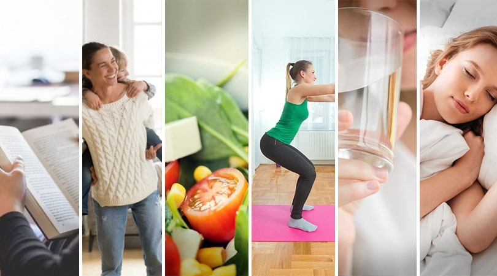

Para um cuidador, o autocuidado é essencial e não egoísta.
Cuidar de alguém exige uma grande quantidade de energia, e negligenciar suas próprias necessidades pode levar rapidamente ao BURNOUT.

Você já deve ter escutado falar sobre a máscara de oxigênio em aviões: "coloque a sua máscara primeiro antes de ajudar os outros". Isso é um lembrete importante para os cuidadores de que, para cuidar efetivamente, eles também precisam cuidar de si mesmos.
Negligenciar o autocuidado acarreta uma série de consequências negativas graves e progressivas. Os principais impactos incluem:
-
Desenvolvimento de Burnout e esgotamento completo de energia física e mental.
Diminuição da Qualidade do Cuidado oferecido à pessoa assistida.
Risco aumentado de quadros de ansiedade, depressão e problemas graves de saúde.
O Alerta do Burnout
O burnout é uma das consequências mais severas e diretamente ligadas à negligência do autocuidado em contextos de alta demanda. Caracteriza-se por um estado de esgotamento completo de energia física e mental, resultante do estresse crônico. Sem tratamento adequado, pode levar a quadros mais graves de ansiedade e depressão, com potenciais problemas de saúde física e mental muito sérios.